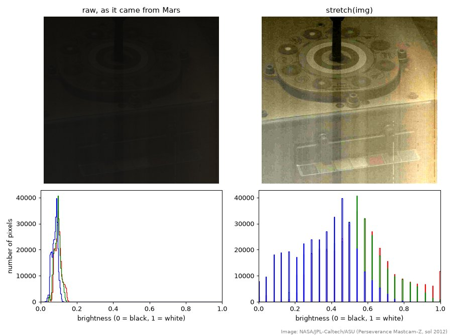

Enhancing Mars
Week 9 Tuesday · in class, after Checkpoint 3 · 2 engagement credits
Skim through before Tuesday, no bring-to-class.
The Perseverance rover takes hundreds of pictures a day on Mars. A lot of them look murky. Today we’ll pick one and pull out the detail that’s hiding in it. The trick is that a picture is just an array of numbers, so everything we’ve learned about arrays (math on a whole array at once, masks, slicing) turns into image processing. We’ll build up the idea on tiny pictures first, then go get a real one from Mars, then work through a toolbox of techniques: contrast, color, blur, sharpen, edges.
A picture is a grid of numbers
A grayscale image is a 2D array: rows and columns of numbers, one per pixel, where 0 is black and 255 is white.
Here’s a tiny “image,” six pixels tall and eight wide:
Try things: change one of the 20s to 255. Make a second bright spot. Make the whole thing dimmer with one line (img = img / 2… what does the picture do?). Note row 0 is at the top, and row numbers grow downward.
Why 255? Each pixel’s brightness is stored in one byte. One byte is eight bits, and bits are either 0 or 1, so with eight bits available we have $2^8=256 possible combinations.
Color is three grids
A color image stores three numbers per pixel: how much red, how much green, how much blue. So its shape is (rows, columns, 3), and each of those three “layers” is called a channel. Here’s a tiny one, two pixels tall and three wide:
Top row: pure red, pure green, pure blue. Bottom row: red + green light makes… yellow (this is light, not paint, so the mixing rules are different from art class). All three at full is white, and equal amounts of all three is gray.
Try: change the gray pixel to [200, 100, 0]. What color do you predict? Then pull out the green channel and the blue channel the same way we pulled out red.
That last observation is worth holding on to: if the red, green, and blue channels are identical, the “color” image is really a gray image.
Go get a picture from Mars
Browse the rover’s raw images here: https://mars.nasa.gov/mars2020/multimedia/raw-images/
Scroll through a few hundred. (This is a task where your eyes are much faster than any code.) Some tips:
- Filter by camera. Mastcam-Z (the rover’s main “eyes,” up on the mast) is where most of the color pictures come from. Navcam and the Hazcams are mostly black and white.
- The boring-looking ones are the best candidates: murky, dark, washed out, low contrast. There’s more hiding in them.
When you find one you like, click it, then right-click the big image and choose Copy Image Address (on an iPad: press and hold, then Copy). You’ll get a long web address ending in .jpg or .png. The version ending in _1200.jpg is plenty big.
Now in Colab, paste the toolbox below into the first cell and run it (it doesn’t do anything yet, it just defines functions), then load your picture:
url = "https://mars.nasa.gov/mars2020-raw-images/pub/ods/surface/sol/..." # paste yours
img = load(url)
print(img.shape)
show([img], ["raw"])Check the shape: (rows, columns, 3)? Then check whether it’s actually color:
print(np.array_equal(img[:, :, 0], img[:, :, 1])) # is red exactly equal to green?True means you’ve found a gray image in disguise: three identical channels. You may want to go back and pick a different one… or not, there are plenty of things to do even with gray images.
The toolbox
Here’s our library of image tools. Copy the whole thing into the first cell of your notebook. Every one of them takes an image and gives back an image, so you can chain them: sharpen(stretch(img)).
You don’t need to understand every line before using them, but read the docstrings, and by the end of class you should be able to say in words what each one does to the numbers.
import numpy as np
import matplotlib.pyplot as plt
import imageio.v3 as iio
from scipy import ndimage
# ---------- getting images in and out ----------
def load(url):
"""Load an image from a web address. Returns floats from 0 to 1, shape (rows, cols, 3)."""
img = iio.imread(url)
if img.ndim == 2: # a gray image: copy it into three channels
img = np.stack([img, img, img], axis=2)
return img[:, :, :3] / 255 # keep red, green, blue; scale 0-255 down to 0-1
def show(images, titles):
"""Show a list of images side by side, with a title over each."""
fig, axes = plt.subplots(1, len(images), figsize=(5 * len(images), 4.5))
for ax, im, title in zip(np.atleast_1d(axes), images, titles):
ax.imshow(np.clip(im, 0, 1))
ax.set_title(title)
ax.axis("off")
plt.show()
def histogram(img):
"""Plot how many pixels have each brightness, one line per channel."""
for c, color in enumerate(["red", "green", "blue"]):
plt.hist(img[:, :, c].ravel(), bins=256, range=(0, 1), color=color, histtype="step")
plt.xlabel("brightness (0 = black, 1 = white)")
plt.ylabel("number of pixels")
plt.show()
# ---------- brightness and contrast: each pixel on its own ----------
def stretch(img, lo_pct=1, hi_pct=99):
"""Linear contrast stretch: the lo_pct percentile becomes black, hi_pct becomes white."""
lo, hi = np.percentile(img, [lo_pct, hi_pct])
return np.clip((img - lo) / (hi - lo), 0, 1)
def stretch_each(img, lo_pct=1, hi_pct=99):
"""Stretch red, green, and blue separately. Removes a color cast (is that honest?)."""
out = np.zeros_like(img)
for c in range(3):
out[:, :, c] = stretch(img[:, :, c], lo_pct, hi_pct)
return out
def gamma(img, g):
"""Bend the brightness curve: g < 1 lifts the shadows, g > 1 deepens them."""
return img ** g
def invert(img):
"""Photographic negative."""
return 1 - img
# ---------- color ----------
def gray(img):
"""Grayscale, weighted the way human eyes weight colors (we're most sensitive to green)."""
g = 0.299 * img[:, :, 0] + 0.587 * img[:, :, 1] + 0.114 * img[:, :, 2]
return np.stack([g, g, g], axis=2)
def scale_channels(img, r=1.0, g=1.0, b=1.0):
"""Multiply each channel by its own factor."""
return np.clip(img * np.array([r, g, b]), 0, 1)
def remove_reds(img):
"""Turn the red channel off entirely."""
return scale_channels(img, r=0)
def white_balance(img, top, bottom, left, right):
"""Scale the channels so the patch img[top:bottom, left:right] comes out neutral gray."""
patch = img[top:bottom, left:right]
means = patch.reshape(-1, 3).mean(axis=0) # average red, green, blue in the patch
return np.clip(img * means.mean() / means, 0, 1)
def false_color(img, cmap="inferno"):
"""Map brightness onto a color scale. The colors mean 'brighter', not 'what it looked like'."""
return plt.get_cmap(cmap)(gray(img)[:, :, 0])[:, :, :3]
# ---------- neighborhoods: each pixel compared with the pixels around it ----------
def blur(img, size=3):
"""Replace each pixel with a weighted average of its neighbors, out to about `size` pixels."""
return ndimage.gaussian_filter(img, sigma=(size, size, 0))
def sharpen(img, amount=1.0, size=3):
"""Unsharp mask: find the detail (image minus its blur) and add extra of it back."""
detail = img - blur(img, size)
return np.clip(img + amount * detail, 0, 1)
def edges(img):
"""Brightness change between neighboring pixels: bright where the picture has an edge."""
g = gray(img)[:, :, 0]
dx = np.zeros_like(g)
dy = np.zeros_like(g)
dx[:, 1:] = np.diff(g, axis=1) # change from each pixel to the one on its right
dy[1:, :] = np.diff(g, axis=0) # ...and to the one below it
e = np.sqrt(dx**2 + dy**2) # Pythagoras: total change
e = e / e.max()
return np.stack([e, e, e], axis=2)
def threshold(img, level=0.5):
"""Pure black and white: white wherever the brightness is above `level`."""
m = (gray(img)[:, :, 0] > level).astype(float)
return np.stack([m, m, m], axis=2)
# ---------- geometry ----------
def crop(img, top, bottom, left, right):
"""Keep only rows top..bottom and columns left..right."""
return img[top:bottom, left:right]load divides by 255, so inside the toolbox every brightness is a decimal from 0 (black) to 1 (white) instead of a whole number from 0 to 255. That makes the algebra cleaner (1 means “full,” and 1 - img is a negative), and it dodges a nasty trap, described in the margin.
The trap: images normally store brightness as whole numbers 0 to 255, and only those. Ask NumPy for 10 − 20 in that format and you don’t get −10. It wraps around to 246, nearly white. A “negative brightness” showing up as bright white is a great example of an answer that should make us suspicious. Working in decimals avoids it entirely.
Reading a histogram
A histogram counts how many pixels have each brightness:
histogram(img)The horizontal axis is brightness, from black on the left to white on the right. The height is how many pixels have that brightness. A dark, murky picture has most of its pixels in a narrow range on the left. A well-exposed picture spreads across most of the range.
What does yours look like? Is there anything at all out near 1?
Stretching
Here’s a real example from sol 2012 (October 2026): a Mastcam-Z picture of the calibration target, taken with almost no light. Its histogram is the lump on the bottom left. Every pixel is between about 0.04 and 0.14. Nothing is even remotely bright.

The fix is to stretch: take the darkest pixels we care about and make them black, take the brightest and make them white, and spread everything in between evenly. That’s a straight line:
\[ \text{new} = \frac{\text{old} - \text{lo}}{\text{hi} - \text{lo}} \]
Check the ends: a pixel at exactly lo becomes \(0/(\text{hi}-\text{lo}) = 0\), black. A pixel at hi becomes 1, white. Halfway between becomes 0.5. Anything darker than lo or brighter than hi would land below 0 or above 1, so np.clip pins those at 0 and 1.
How do we choose lo and hi? We could use the very darkest and brightest pixels, but one stray hot pixel would wreck that. Instead, stretch uses percentiles: by default, lo is a brightness that only 1% of pixels are darker than, and hi is one that only 1% are brighter than. We sacrifice the extreme 1% at each end (they become pure black or pure white) to make the other 98% use the whole range.
s = stretch(img)
show([img, s], ["raw", "stretched"])
histogram(s)In the example, the target comes out of the dark: rings, bolts, the little color chips along the bottom. That information was in the picture all along. It was just all squeezed into a sliver of the brightness range, too dark for us to tell apart.
Try stretch(img, 5, 95) and stretch(img, 0, 100). What changes?
The comb: what enhancement can’t do
Now look closely at the stretched histogram in the example. It isn’t a smooth hill. It’s a comb: spikes with empty gaps between them.
The raw image stored brightness as whole numbers from 0 to 255, and the middle 98% of its pixels used only the values 11 through 35. That’s just 25 different shades. Stretching spread those 25 shades out across the whole range… but it’s still 25 shades, the number value must still be a whole number.
Is an enhanced picture honest?
Stretching a picture means choosing which range of brightness to spread across the screen. It’s spiritually similar to zooming in a plot’s y-axis: set_ylim versus stretch. Neither one changes the data, but both change what a reader thinks they’re seeing.
But what color is Mars? The raw pictures come out reddish-brown. stretch_each stretches each channel separately, which usually strips that cast away and leaves things looking grayer and “cleaner.” Is that a better picture, or a less truthful one? (Mars really is red.)
The rover team’s actual answer involves the calibration target. Its gray squares are known to be gray, so if they come out tinted in a picture, the tint came from the lighting and the camera, not the target. white_balance is a correction: give it the rows and columns of a patch you know should be gray (read them off the axes of plt.imshow), and it scales the three channels until that patch is gray.
plt.imshow(img) # find a gray square on the target; note its rows and columns
plt.show()
wb = white_balance(img, 850, 900, 420, 470) # top, bottom, left, right: your numbers here
show([img, wb], ["raw", "white balanced"])What does that do to the color of the ground? The target was sitting in Martian light, so “make the target gray” means “show the scene as if it were lit by Earth-like white light.”
The rest of the toolbox
Here’s every tool applied to one picture of the calibration target. Click to enlarge.

The tools come in two families.
One pixel at a time. stretch, gamma, invert, gray, scale_channels, remove_reds, white_balance, false_color, and threshold all compute each new pixel from that same pixel.
gamma(img, 0.5)is \(\text{new} = \text{old}^{0.5}\). Because brightness is between 0 and 1, a power less than 1 lifts dark values a lot and bright values only a little (\(0.04^{0.5} = 0.2\), but \(0.81^{0.5} = 0.9\)). Good for digging into shadows.remove_redsmultiplies the red channel by zero. On Mars, that’s a dramatic change (everything goes teal), which tells you how much of the scene’s “color” lives in the red channel.false_colormaps brightness onto a color scale, the way a thermal camera does. It can make subtle brightness differences easier to see, but the colors are invented: purple means “darker,” not “purple.”
Neighborhoods. blur, sharpen, and edges compute each new pixel from the pixel and its neighbors.
blurreplaces each pixel with an average of the pixels around it (nearby ones count more). Smooths out noise, and detail with it.sharpenis a clever trick. Ifblur(img)is the picture without its fine detail, thenimg - blur(img)is just the fine detail. Extra of that is added back: \(\text{sharpened} = \text{img} + \text{amount} \times \text{detail}\). Turnamountup to 5 and look closely: you’ll see bright halos along edges, and the noise gets “sharpened” too. More sharpening stops meaning more detail at some point.edgesasks how much each pixel differs from the pixel to its right and the pixel below it. Where the picture is smooth, neighbors are nearly equal, the differences are about zero, and the result is black. At an edge there’s a big jump, and it lights up. The two differences get combined with Pythagoras, \(\sqrt{dx^2 + dy^2}\), the same way we’d combine an east-west and a north-south distance. One subtraction finds the outline of every rock!
Your turn
Pick your image and make the best version of it you can. “Best” is your call: maybe the most detail in the shadows, maybe the clearest rock texture, maybe the most striking picture. Chain at least three tools together, and try each one by itself first so you know what it’s contributing.
Then write the caption like an engineer would, so a stranger could reproduce your picture exactly:
Perseverance Mastcam-Z, sol 2012, image ZL0_2012_0845557723 (raw). Processing:
sharpen(stretch(img, 2, 98), amount=1.5). Contrast stretched, then sharpened; colors not corrected.
Deliverable (2 EC)
One Colab notebook per student with:
- Your raw image and your final version side by side, with the histograms of both.
- The caption: which image (sol, camera, ID or web address) and exactly which tools, in order, with their settings.
- Two or three sentences: what did your processing reveal, and what did it not or could not reveal? Is your final version an honest picture of Mars? <!– ## Challenge: let the code browse
The website is great for browsing, but the same images are available as JSON, just like the ISS and the earthquakes in week 8. This asks for the 100 newest images, keeps only the color ones, and shows them as a contact sheet:
import requests
url = "https://mars.nasa.gov/rss/api/?feed=raw_images&category=mars2020&feedtype=json&num=100&page=0&order=sol+desc"
reply = requests.get(url, timeout=30).json()
color = []
for item in reply["images"]:
if item["camera"]["filter_name"].endswith("RGB"):
color.append(item)
print(len(color), "color images out of", len(reply["images"]))
fig, axes = plt.subplots(4, 5, figsize=(15, 10))
for k, ax in enumerate(axes.ravel()):
ax.axis("off")
if k < len(color):
ax.imshow(iio.imread(color[k]["image_files"]["small"]))
ax.set_title(f'{k}: sol {color[k]["sol"]}', fontsize=9)
plt.show()Print the whole reply once and look around first (that’s the habit, right?). Then: are all the “color” ones actually color? (Check one with np.array_equal.) What do page=1 and num= do to the web address? Can you find the path to an image’s caption, or the time it was taken? –>